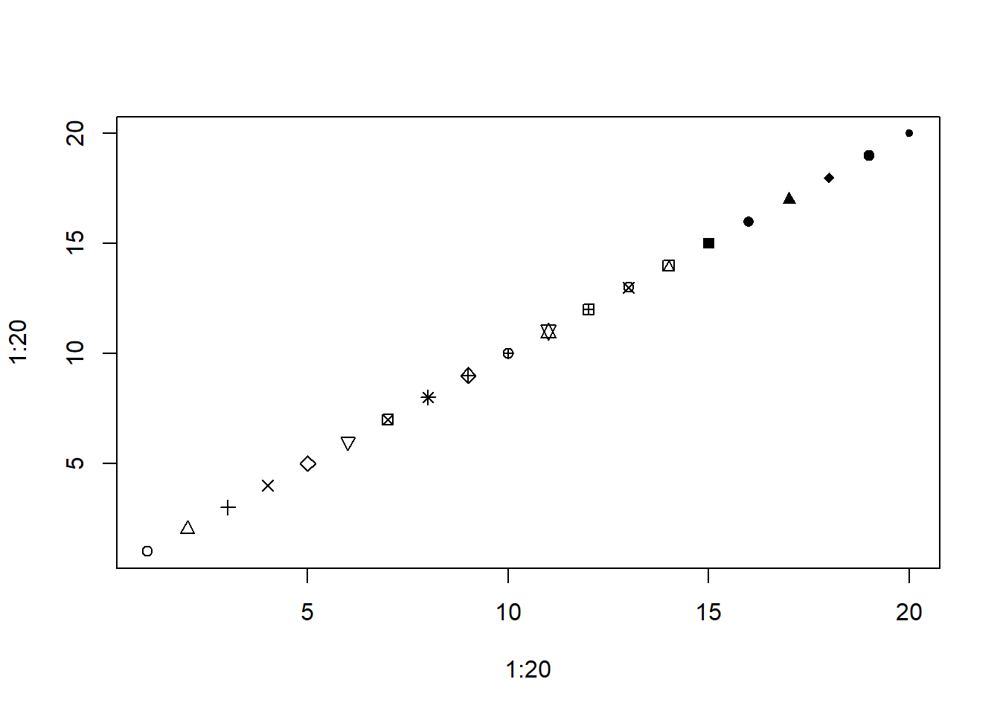
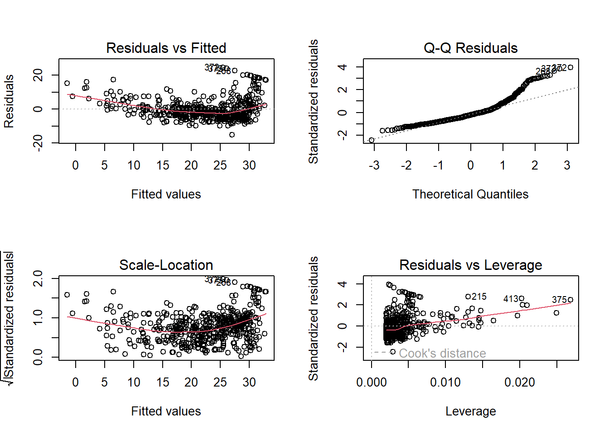

library(MASS)
library(ISLR2)Error in library(ISLR2): there is no package called 'ISLR2'The library() function is used to load libraries, or groups of functions and data sets that are not included in the base R distribution. Basic functions that perform least squares linear regression and other simple analyses come standard with the base distribution, but more exotic functions require additional libraries. Here we load the MASS package, which is a very large collection of data sets and functions. We also load the ISLR2 package, which includes the data sets associated with this book.
library(MASS)
library(ISLR2)Error in library(ISLR2): there is no package called 'ISLR2'If you receive an error message when loading any of these libraries, it likely indicates that the corresponding library has not yet been installed on your system. Some libraries, such as MASS, come with R and do not need to be separately installed on your computer. However, other packages, such as ISLR2, must be downloaded the first time they are used. This can be done directly from within R. For example, on a Windows system, select the Install package option under the Packages tab. After you select any mirror site, a list of available packages will appear. Simply select the package you wish to install and R will automatically download the package. Alternatively, this can be done at the R command line via install.packages("ISLR2"). This installation only needs to be done the first time you use a package. However, the library() function must be called within each R session.
The ISLR2 library contains the Boston data set, which records medv (median house value) for \(506\) census tracts in Boston. We will seek to predict medv using \(12\) predictors such as rmvar (average number of rooms per house), age (proportion of owner-occupied units built prior to 1940) and lstat (percent of households with low socioeconomic status).
head(Boston) crim zn indus chas nox rm age dis rad tax ptratio black lstat
1 0.00632 18 2.31 0 0.538 6.575 65.2 4.0900 1 296 15.3 396.90 4.98
2 0.02731 0 7.07 0 0.469 6.421 78.9 4.9671 2 242 17.8 396.90 9.14
3 0.02729 0 7.07 0 0.469 7.185 61.1 4.9671 2 242 17.8 392.83 4.03
4 0.03237 0 2.18 0 0.458 6.998 45.8 6.0622 3 222 18.7 394.63 2.94
5 0.06905 0 2.18 0 0.458 7.147 54.2 6.0622 3 222 18.7 396.90 5.33
6 0.02985 0 2.18 0 0.458 6.430 58.7 6.0622 3 222 18.7 394.12 5.21
medv
1 24.0
2 21.6
3 34.7
4 33.4
5 36.2
6 28.7To find out more about the data set, we can type ?Boston.
We will start by using the lm() function to fit a simple linear regression model, with medv as the response and lstat as the predictor. The basic syntax is lm(y ~ x, data), where y is the response, x is the predictor, and data is the data set in which these two variables are kept.
lm.fit <- lm(medv ~ lstat)Error in eval(predvars, data, env): object 'medv' not foundThe command causes an error because R does not know where to find the variables medv and lstat. The next line tells R that the variables are in Boston. If we attach Boston, the first line works fine because R now recognizes the variables.
lm.fit <- lm(medv ~ lstat, data = Boston)
attach(Boston)
lm.fit <- lm(medv ~ lstat)If we type lm.fit, some basic information about the model is output. For more detailed information, we use summary(lm.fit). This gives us \(p\)-values and standard errors for the coefficients, as well as the \(R^2\) statistic and \(F\)-statistic for the model.
lm.fit
Call:
lm(formula = medv ~ lstat)
Coefficients:
(Intercept) lstat
34.55 -0.95 summary(lm.fit)
Call:
lm(formula = medv ~ lstat)
Residuals:
Min 1Q Median 3Q Max
-15.168 -3.990 -1.318 2.034 24.500
Coefficients:
Estimate Std. Error t value Pr(>|t|)
(Intercept) 34.55384 0.56263 61.41 <2e-16 ***
lstat -0.95005 0.03873 -24.53 <2e-16 ***
---
Signif. codes: 0 '***' 0.001 '**' 0.01 '*' 0.05 '.' 0.1 ' ' 1
Residual standard error: 6.216 on 504 degrees of freedom
Multiple R-squared: 0.5441, Adjusted R-squared: 0.5432
F-statistic: 601.6 on 1 and 504 DF, p-value: < 2.2e-16We can use the names() function in order to find out what other pieces of information are stored in lm.fit. Although we can extract these quantities by name—e.g. lm.fit$coefficients—it is safer to use the extractor functions like coef() to access them.
names(lm.fit) [1] "coefficients" "residuals" "effects" "rank"
[5] "fitted.values" "assign" "qr" "df.residual"
[9] "xlevels" "call" "terms" "model" coef(lm.fit)(Intercept) lstat
34.5538409 -0.9500494 In order to obtain a confidence interval for the coefficient estimates, we can use the confint() command.
confint(lm.fit) 2.5 % 97.5 %
(Intercept) 33.448457 35.6592247
lstat -1.026148 -0.8739505The predict() function can be used to produce confidence intervals and prediction intervals for the prediction of medv for a given value of lstat.
predict(lm.fit, data.frame(lstat = (c(5, 10, 15))),
interval = "confidence") fit lwr upr
1 29.80359 29.00741 30.59978
2 25.05335 24.47413 25.63256
3 20.30310 19.73159 20.87461predict(lm.fit, data.frame(lstat = (c(5, 10, 15))),
interval = "prediction") fit lwr upr
1 29.80359 17.565675 42.04151
2 25.05335 12.827626 37.27907
3 20.30310 8.077742 32.52846For instance, the 95 % confidence interval associated with a lstat value of 10 is \((24.47, 25.63)\), and the 95 % prediction interval is \((12.828, 37.28)\). As expected, the confidence and prediction intervals are centered around the same point (a predicted value of \(25.05\) for medv when lstat equals 10), but the latter are substantially wider.
We will now plot medv and lstat along with the least squares regression line using the plot() and abline() functions.
plot(lstat, medv)
abline(lm.fit)
There is some evidence for non-linearity in the relationship between lstat and medv. We will explore this issue later in this lab.
The abline() function can be used to draw any line, not just the least squares regression line. To draw a line with intercept a and slope b, we type abline(a, b). Below we experiment with some additional settings for plotting lines and points. The lwd = 3 command causes the width of the regression line to be increased by a factor of 3; this works for the plot() and lines() functions also. We can also use the pch option to create different plotting symbols.
plot(lstat, medv)
abline(lm.fit, lwd = 3)
abline(lm.fit, lwd = 3, col = "red")
plot(lstat, medv, col = "red")
plot(lstat, medv, pch = 20)
plot(lstat, medv, pch = "+")
plot(1:20, 1:20, pch = 1:20)
Next we examine some diagnostic plots, several of which were discussed in Section 3.3.3. Four diagnostic plots are automatically produced by applying the plot() function directly to the output from lm(). In general, this command will produce one plot at a time, and hitting Enter will generate the next plot. However, it is often convenient to view all four plots together. We can achieve this by using the par() and mfrow() functions, which tell R to split the display screen into separate panels so that multiple plots can be viewed simultaneously. For example, par(mfrow = c(2, 2)) divides the plotting region into a \(2 \times 2\) grid of panels.
par(mfrow = c(2, 2))
plot(lm.fit)
Alternatively, we can compute the residuals from a linear regression fit using the residuals() function. The function rstudent() will return the studentized residuals, and we can use this function to plot the residuals against the fitted values.
plot(predict(lm.fit), residuals(lm.fit))
plot(predict(lm.fit), rstudent(lm.fit))
On the basis of the residual plots, there is some evidence of non-linearity. Leverage statistics can be computed for any number of predictors using the hatvalues() function.
plot(hatvalues(lm.fit))
which.max(hatvalues(lm.fit))375
375 The which.max() function identifies the index of the largest element of a vector. In this case, it tells us which observation has the largest leverage statistic.
In order to fit a multiple linear regression model using least squares, we again use the lm() function. The syntax lm(y ~ x1 + x2 + x3) is used to fit a model with three predictors, x1, x2, and x3. The summary() function now outputs the regression coefficients for all the predictors.
lm.fit <- lm(medv ~ lstat + age, data = Boston)
summary(lm.fit)
Call:
lm(formula = medv ~ lstat + age, data = Boston)
Residuals:
Min 1Q Median 3Q Max
-15.981 -3.978 -1.283 1.968 23.158
Coefficients:
Estimate Std. Error t value Pr(>|t|)
(Intercept) 33.22276 0.73085 45.458 < 2e-16 ***
lstat -1.03207 0.04819 -21.416 < 2e-16 ***
age 0.03454 0.01223 2.826 0.00491 **
---
Signif. codes: 0 '***' 0.001 '**' 0.01 '*' 0.05 '.' 0.1 ' ' 1
Residual standard error: 6.173 on 503 degrees of freedom
Multiple R-squared: 0.5513, Adjusted R-squared: 0.5495
F-statistic: 309 on 2 and 503 DF, p-value: < 2.2e-16The Boston data set contains 12 variables, and so it would be cumbersome to have to type all of these in order to perform a regression using all of the predictors. Instead, we can use the following short-hand:
lm.fit <- lm(medv ~ ., data = Boston)
summary(lm.fit)
Call:
lm(formula = medv ~ ., data = Boston)
Residuals:
Min 1Q Median 3Q Max
-15.595 -2.730 -0.518 1.777 26.199
Coefficients:
Estimate Std. Error t value Pr(>|t|)
(Intercept) 3.646e+01 5.103e+00 7.144 3.28e-12 ***
crim -1.080e-01 3.286e-02 -3.287 0.001087 **
zn 4.642e-02 1.373e-02 3.382 0.000778 ***
indus 2.056e-02 6.150e-02 0.334 0.738288
chas 2.687e+00 8.616e-01 3.118 0.001925 **
nox -1.777e+01 3.820e+00 -4.651 4.25e-06 ***
rm 3.810e+00 4.179e-01 9.116 < 2e-16 ***
age 6.922e-04 1.321e-02 0.052 0.958229
dis -1.476e+00 1.995e-01 -7.398 6.01e-13 ***
rad 3.060e-01 6.635e-02 4.613 5.07e-06 ***
tax -1.233e-02 3.760e-03 -3.280 0.001112 **
ptratio -9.527e-01 1.308e-01 -7.283 1.31e-12 ***
black 9.312e-03 2.686e-03 3.467 0.000573 ***
lstat -5.248e-01 5.072e-02 -10.347 < 2e-16 ***
---
Signif. codes: 0 '***' 0.001 '**' 0.01 '*' 0.05 '.' 0.1 ' ' 1
Residual standard error: 4.745 on 492 degrees of freedom
Multiple R-squared: 0.7406, Adjusted R-squared: 0.7338
F-statistic: 108.1 on 13 and 492 DF, p-value: < 2.2e-16We can access the individual components of a summary object by name (type ?summary.lm to see what is available). Hence summary(lm.fit)$r.sq gives us the \(R^2\), and summary(lm.fit)$sigma gives us the RSE. The vif() function, part of the car package, can be used to compute variance inflation factors. Most VIF’s are low to moderate for this data. The car package is not part of the base R installation so it must be downloaded the first time you use it via the install.packages() function in R.
library(car)Error in library(car): there is no package called 'car'vif(lm.fit)Error in vif(lm.fit): could not find function "vif"What if we would like to perform a regression using all of the variables but one? For example, in the above regression output, age has a high \(p\)-value. So we may wish to run a regression excluding this predictor. The following syntax results in a regression using all predictors except age.
lm.fit1 <- lm(medv ~ . - age, data = Boston)
summary(lm.fit1)
Call:
lm(formula = medv ~ . - age, data = Boston)
Residuals:
Min 1Q Median 3Q Max
-15.6054 -2.7313 -0.5188 1.7601 26.2243
Coefficients:
Estimate Std. Error t value Pr(>|t|)
(Intercept) 36.436927 5.080119 7.172 2.72e-12 ***
crim -0.108006 0.032832 -3.290 0.001075 **
zn 0.046334 0.013613 3.404 0.000719 ***
indus 0.020562 0.061433 0.335 0.737989
chas 2.689026 0.859598 3.128 0.001863 **
nox -17.713540 3.679308 -4.814 1.97e-06 ***
rm 3.814394 0.408480 9.338 < 2e-16 ***
dis -1.478612 0.190611 -7.757 5.03e-14 ***
rad 0.305786 0.066089 4.627 4.75e-06 ***
tax -0.012329 0.003755 -3.283 0.001099 **
ptratio -0.952211 0.130294 -7.308 1.10e-12 ***
black 0.009321 0.002678 3.481 0.000544 ***
lstat -0.523852 0.047625 -10.999 < 2e-16 ***
---
Signif. codes: 0 '***' 0.001 '**' 0.01 '*' 0.05 '.' 0.1 ' ' 1
Residual standard error: 4.74 on 493 degrees of freedom
Multiple R-squared: 0.7406, Adjusted R-squared: 0.7343
F-statistic: 117.3 on 12 and 493 DF, p-value: < 2.2e-16Alternatively, the update() function can be used.
lm.fit1 <- update(lm.fit, ~ . - age)It is easy to include interaction terms in a linear model using the lm() function. The syntax lstat:age tells R to include an interaction term between lstat and age. The syntax lstat * age simultaneously includes lstat, age, and the interaction term lstat\(\times\)age as predictors; it is a shorthand for lstat + age + lstat:age. %We can also pass in transformed versions of the predictors.
summary(lm(medv ~ lstat * age, data = Boston))
Call:
lm(formula = medv ~ lstat * age, data = Boston)
Residuals:
Min 1Q Median 3Q Max
-15.806 -4.045 -1.333 2.085 27.552
Coefficients:
Estimate Std. Error t value Pr(>|t|)
(Intercept) 36.0885359 1.4698355 24.553 < 2e-16 ***
lstat -1.3921168 0.1674555 -8.313 8.78e-16 ***
age -0.0007209 0.0198792 -0.036 0.9711
lstat:age 0.0041560 0.0018518 2.244 0.0252 *
---
Signif. codes: 0 '***' 0.001 '**' 0.01 '*' 0.05 '.' 0.1 ' ' 1
Residual standard error: 6.149 on 502 degrees of freedom
Multiple R-squared: 0.5557, Adjusted R-squared: 0.5531
F-statistic: 209.3 on 3 and 502 DF, p-value: < 2.2e-16The lm() function can also accommodate non-linear transformations of the predictors. For instance, given a predictor \(X\), we can create a predictor \(X^2\) using I(X^2). The function I() is needed since the ^ has a special meaning in a formula object; wrapping as we do allows the standard usage in R, which is to raise X to the power 2. We now perform a regression of medv onto lstat and lstat^2.
lm.fit2 <- lm(medv ~ lstat + I(lstat^2))
summary(lm.fit2)
Call:
lm(formula = medv ~ lstat + I(lstat^2))
Residuals:
Min 1Q Median 3Q Max
-15.2834 -3.8313 -0.5295 2.3095 25.4148
Coefficients:
Estimate Std. Error t value Pr(>|t|)
(Intercept) 42.862007 0.872084 49.15 <2e-16 ***
lstat -2.332821 0.123803 -18.84 <2e-16 ***
I(lstat^2) 0.043547 0.003745 11.63 <2e-16 ***
---
Signif. codes: 0 '***' 0.001 '**' 0.01 '*' 0.05 '.' 0.1 ' ' 1
Residual standard error: 5.524 on 503 degrees of freedom
Multiple R-squared: 0.6407, Adjusted R-squared: 0.6393
F-statistic: 448.5 on 2 and 503 DF, p-value: < 2.2e-16The near-zero \(p\)-value associated with the quadratic term suggests that it leads to an improved model. We use the anova() function to further quantify the extent to which the quadratic fit is superior to the linear fit.
lm.fit <- lm(medv ~ lstat)
anova(lm.fit, lm.fit2)Analysis of Variance Table
Model 1: medv ~ lstat
Model 2: medv ~ lstat + I(lstat^2)
Res.Df RSS Df Sum of Sq F Pr(>F)
1 504 19472
2 503 15347 1 4125.1 135.2 < 2.2e-16 ***
---
Signif. codes: 0 '***' 0.001 '**' 0.01 '*' 0.05 '.' 0.1 ' ' 1Here Model 1 represents the linear submodel containing only one predictor, lstat, while Model 2 corresponds to the larger quadratic model that has two predictors, lstat and lstat^2. The anova() function performs a hypothesis test comparing the two models. The null hypothesis is that the two models fit the data equally well, and the alternative hypothesis is that the full model is superior. Here the \(F\)-statistic is \(135\) and the associated \(p\)-value is virtually zero. This provides very clear evidence that the model containing the predictors lstat and lstat^2 is far superior to the model that only contains the predictor lstat. This is not surprising, since earlier we saw evidence for non-linearity in the relationship between medv and lstat. If we type
par(mfrow = c(2, 2))
plot(lm.fit2)
then we see that when the lstat^2 term is included in the model, there is little discernible pattern in the residuals.
In order to create a cubic fit, we can include a predictor of the form I(X^3). However, this approach can start to get cumbersome for higher-order polynomials. A better approach involves using the poly() function to create the polynomial within lm(). For example, the following command produces a fifth-order polynomial fit:
lm.fit5 <- lm(medv ~ poly(lstat, 5))
summary(lm.fit5)
Call:
lm(formula = medv ~ poly(lstat, 5))
Residuals:
Min 1Q Median 3Q Max
-13.5433 -3.1039 -0.7052 2.0844 27.1153
Coefficients:
Estimate Std. Error t value Pr(>|t|)
(Intercept) 22.5328 0.2318 97.197 < 2e-16 ***
poly(lstat, 5)1 -152.4595 5.2148 -29.236 < 2e-16 ***
poly(lstat, 5)2 64.2272 5.2148 12.316 < 2e-16 ***
poly(lstat, 5)3 -27.0511 5.2148 -5.187 3.10e-07 ***
poly(lstat, 5)4 25.4517 5.2148 4.881 1.42e-06 ***
poly(lstat, 5)5 -19.2524 5.2148 -3.692 0.000247 ***
---
Signif. codes: 0 '***' 0.001 '**' 0.01 '*' 0.05 '.' 0.1 ' ' 1
Residual standard error: 5.215 on 500 degrees of freedom
Multiple R-squared: 0.6817, Adjusted R-squared: 0.6785
F-statistic: 214.2 on 5 and 500 DF, p-value: < 2.2e-16This suggests that including additional polynomial terms, up to fifth order, leads to an improvement in the model fit! However, further investigation of the data reveals that no polynomial terms beyond fifth order have significant \(p\)-values in a regression fit.
By default, the poly() function orthogonalizes the predictors: this means that the features output by this function are not simply a sequence of powers of the argument. However, a linear model applied to the output of the poly() function will have the same fitted values as a linear model applied to the raw polynomials (although the coefficient estimates, standard errors, and p-values will differ). In order to obtain the raw polynomials from the poly() function, the argument raw = TRUE must be used.
Of course, we are in no way restricted to using polynomial transformations of the predictors. Here we try a log transformation.
summary(lm(medv ~ log(rm), data = Boston))
Call:
lm(formula = medv ~ log(rm), data = Boston)
Residuals:
Min 1Q Median 3Q Max
-19.487 -2.875 -0.104 2.837 39.816
Coefficients:
Estimate Std. Error t value Pr(>|t|)
(Intercept) -76.488 5.028 -15.21 <2e-16 ***
log(rm) 54.055 2.739 19.73 <2e-16 ***
---
Signif. codes: 0 '***' 0.001 '**' 0.01 '*' 0.05 '.' 0.1 ' ' 1
Residual standard error: 6.915 on 504 degrees of freedom
Multiple R-squared: 0.4358, Adjusted R-squared: 0.4347
F-statistic: 389.3 on 1 and 504 DF, p-value: < 2.2e-16We will now examine the Carseats data, which is part of the ISLR2 library. We will attempt to predict Sales (child car seat sales) in \(400\) locations based on a number of predictors.
head(Carseats)Error in eval(expr, envir, enclos): object 'Carseats' not foundThe Carseats data includes qualitative predictors such as shelveloc, an indicator of the quality of the shelving location—that is, the space within a store in which the car seat is displayed—at each location. The predictor shelveloc takes on three possible values: Bad, Medium, and Good. Given a qualitative variable such as shelveloc, R generates dummy variables automatically. Below we fit a multiple regression model that includes some interaction terms.
lm.fit <- lm(Sales ~ . + Income:Advertising + Price:Age,
data = Carseats)Error in eval(mf, parent.frame()): object 'Carseats' not foundsummary(lm.fit)
Call:
lm(formula = medv ~ lstat)
Residuals:
Min 1Q Median 3Q Max
-15.168 -3.990 -1.318 2.034 24.500
Coefficients:
Estimate Std. Error t value Pr(>|t|)
(Intercept) 34.55384 0.56263 61.41 <2e-16 ***
lstat -0.95005 0.03873 -24.53 <2e-16 ***
---
Signif. codes: 0 '***' 0.001 '**' 0.01 '*' 0.05 '.' 0.1 ' ' 1
Residual standard error: 6.216 on 504 degrees of freedom
Multiple R-squared: 0.5441, Adjusted R-squared: 0.5432
F-statistic: 601.6 on 1 and 504 DF, p-value: < 2.2e-16The contrasts() function returns the coding that R uses for the dummy variables.
attach(Carseats)Error in eval(expr, envir, enclos): object 'Carseats' not foundcontrasts(ShelveLoc)Error in eval(expr, envir, enclos): object 'ShelveLoc' not foundUse ?contrasts to learn about other contrasts, and how to set them.
R has created a ShelveLocGood dummy variable that takes on a value of 1 if the shelving location is good, and 0 otherwise. It has also created a ShelveLocMedium dummy variable that equals 1 if the shelving location is medium, and 0 otherwise. A bad shelving location corresponds to a zero for each of the two dummy variables. The fact that the coefficient for ShelveLocGood in the regression output is positive indicates that a good shelving location is associated with high sales (relative to a bad location). And ShelveLocMedium has a smaller positive coefficient, indicating that a medium shelving location is associated with higher sales than a bad shelving location but lower sales than a good shelving location.
As we have seen, R comes with many useful functions, and still more functions are available by way of R libraries. However, we will often be interested in performing an operation for which no function is available. In this setting, we may want to write our own function. For instance, below we provide a simple function that reads in the ISLR2 and MASS libraries, called LoadLibraries(). Before we have created the function, R returns an error if we try to call it.
LoadLibrariesError in eval(expr, envir, enclos): object 'LoadLibraries' not foundLoadLibraries()Error in LoadLibraries(): could not find function "LoadLibraries"We now create the function. Note that the + symbols are printed by R and should not be typed in. The { symbol informs R that multiple commands are about to be input. Hitting Enter after typing { will cause R to print the + symbol. We can then input as many commands as we wish, hitting {Enter} after each one. Finally the } symbol informs R that no further commands will be entered.
LoadLibraries <- function() {
library(ISLR2)
library(MASS)
print("The libraries have been loaded.")
}Now if we type in LoadLibraries, R will tell us what is in the function.
LoadLibrariesfunction() {
library(ISLR2)
library(MASS)
print("The libraries have been loaded.")
}If we call the function, the libraries are loaded in and the print statement is output.
LoadLibraries()Error in library(ISLR2): there is no package called 'ISLR2'